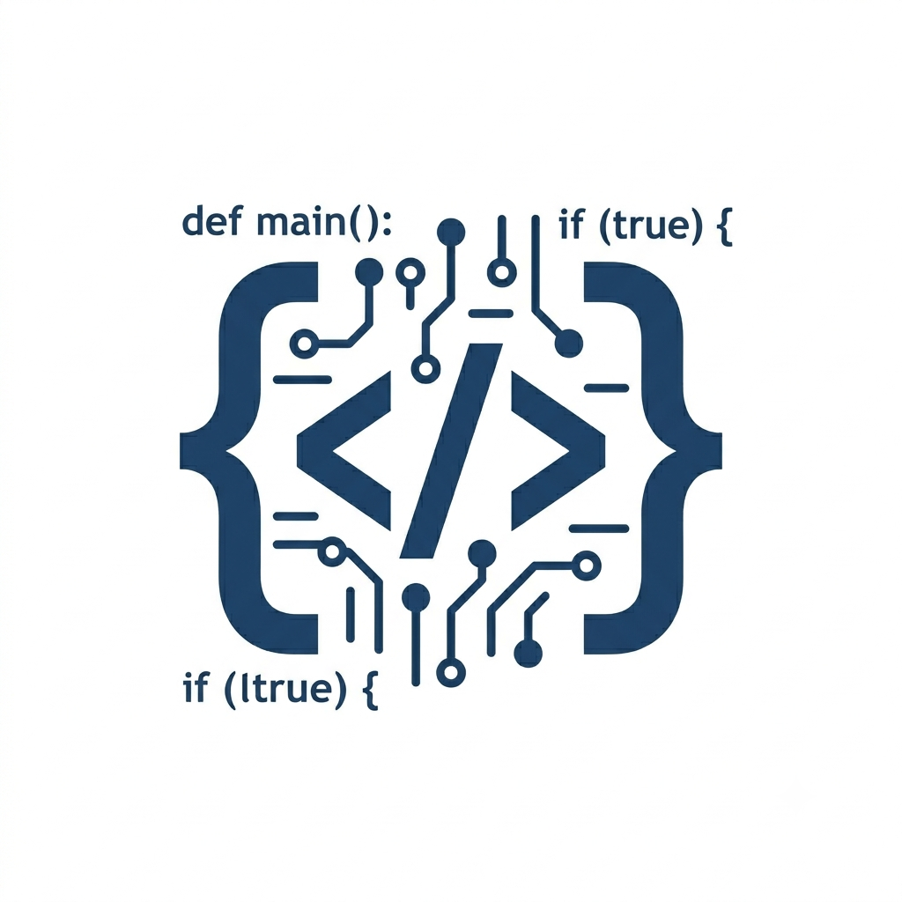

Meu primeiro post
Por: Enzo Franceschini
Boas-vindas ao meu primeiro blog! aqui vou compartilhar dicas e curiosidades sobre a area de tecnologia
Um blog para espalhar conhecimento sobre tecnologia e programação

Por: Enzo Franceschini
Boas-vindas ao meu primeiro blog! aqui vou compartilhar dicas e curiosidades sobre a area de tecnologia